When travelling you are faced with decisions on where to spend your hard earned money — which activity will give you bang for buck? This section answers some of the questions I get asked most.
Select a question above to explore
What, How, Why
How do I experience the Māori Culture?
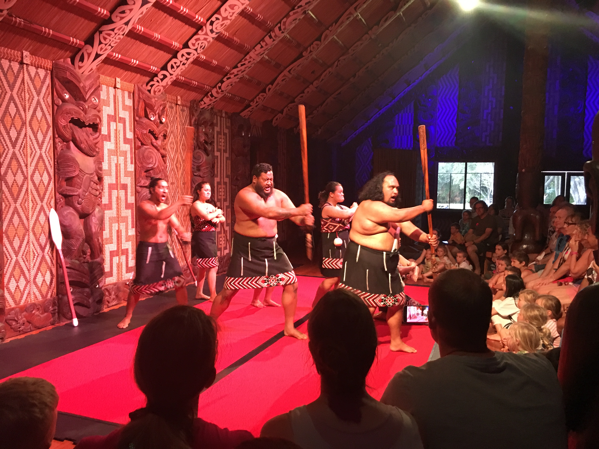
Modern Māori culture is largely integrated within secular society so is all around you. The Māori no longer live in separate villages or wear traditional dress (they largely gave this up around the early 1900’s).
Traditional Māori culture can be easily accessed mainly in Rotorua with a wide range of options to suit budget and time. One of the big operators runs shows in Christchurch also.
Personally I recommend the tours that include a hangi. All of the tours will take you through a pōwhiri, some may include a wero, all will have a performance of some kind and a hongi for some of the audience.
Experiencing the traditional Māori culture outside these types of shows is rare for non-Māori, as a born and bred pākehā New Zealander I have only experienced one Pōwhiri outside a show in my life, and I consider myself someone interested in the Māori culture.
The protocol that the shows follow is the traditional protocol, although some exceptions are made to allow for tourism, like for instance the pōwhiri should take place before sunset, this is largely ignored to let people be a part of the show in the evenings.
If you go to Paihia and visit Waitangi there is a good show at the Waitangi grounds also.
What, How, Why
Which Glacier should I visit?
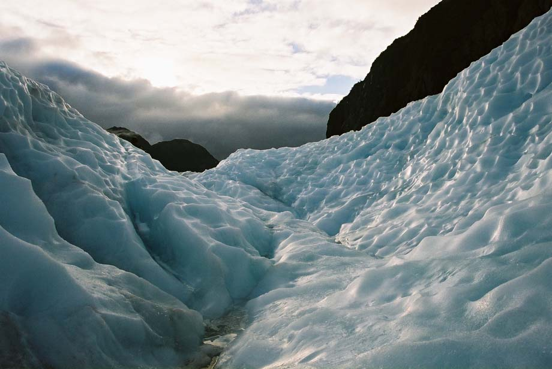
Nearly all tourists travelling New Zealand who experience a glacier will go to one of the top three: Franz Josef, Fox Glacier or Tasman Glacier.
Most of New Zealand’s glaciers are not easily accessible for the average tourist so that right away takes approximately 2,897 off this list.
Franz Josef, Fox Glacier and Tasman Glacier are all in the shadows of Aoraki/Mt Cook and Mt Tasman. Franz Josef and Fox flow westward and the Tasman flows southeastward.
Franz Josef is the more visited of the three, all operators have bases here. Having more visitors there allows for more available options supporting the glacier industry - bars, cafes, hot pools etc.
Fox Glacier is the little brother of Franz Josef and the big operators have operations run out of Fox Glacier town as well.
Tasman Glacier is New Zealand’s largest glacier that is flowing down the side of our highest mountain. Aoraki/Mt Cook village is a very small DOC village set up to support access to the mountain. Talk to the Alpine Shop about options to see/experience Tasman Glacier.
Due to the nature of what a glacier is (a moving frozen river), DO NOT access glaciers without experience or a guide, otherwise follow all signage.
What, How, Why
How should I see the glaciers?
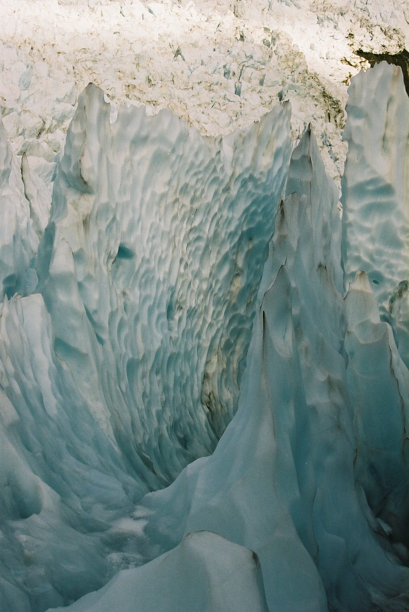
Franz Josef and Fox Glaciers amongst the most accessible glaciers in the world there is many different ways of experiencing the glaciers, depending on ability, time and money.
DO NOT ACCESS THE GLACIERS WITHOUT GLACIAL EXPERIENCE OR GUIDE.
There is an access road and walk where the glacier can be viewed for free. Do not go past protective signs and barriers, people have been regularly killed here by ignoring the signage.
Guided Trips:
1/2 and 3/4 day guided hikes access the lower glacier that is predominately gravel-laden ice. But is a good cheap way of safely accessing the glacier. These hikes are incredibly popular so book early especially in summer.
Full day hikes get you the furthest up the glacier of all the walk only hikes. Giving you spectacular views and clean blue ice.
Ice climb options are more adventurous involving the climbing of vertical walls of ice and abseiling (rappelling) into crevasses. Although it doesn’t get as high as the full day it does get near and achieves similar views.
Heli-hikes are the most expensive way of accessing the glacier but the rewarding views from the helicopter and hiking high on the glacier can make it worth while. Most guides agree this is the best way to see the glacier. As trips involve about 15min helicopter ride above the higher reaches of the glacier under the mountains of Cook and Tasman, landing and providing a 2 hour guided hike on the glacier all amongst clean blue ice, before 5min flight back to town. Again hugely popular so book early.
What, How, Why
Where should I go rafting?
This question has multiple answers depending on what kind and level rafting you wish to partake in.
White water rafting has grades to determine the danger/technical challenge to the rapids. The grades start at 1 and go right up to 6, 1 being the easiest with no skill level required to 6 that experts only should try and undertake.
A very loosely defined cousin of white water rafting is black water rafting. Black water rafting usually doesn’t involve rapids. Black water rafting is riding in an inner tyre tube in a river/stream running through a cave system.
The where’s:
What is billed as the best commercial white water rafting in New Zealand are the Rangitata Rafts. Based 2 hours from Christchurch their day trip encompasses up to grade 5 rapids (an option to walk around those sections is there for those not too keen to take on this level rafting) BBQ meal, showers, wet suits and stunning scenery.
For those who don’t want to dedicate a whole day to rafting and believe that bigger is better then Kaitiaki Adventures based in Rotorua offer the opportunity to raft the largest commercially rafted waterfall in the world. The 2 hour raft trip descends three waterfalls the last one is 7m high. The river is a canal naturally formed in the calderas floor, that apart from the waterfalls offers really only a swift flowing river. The best thing about the Kaitiaki activity is it is a great way to learn to get your feet wet.
When it comes to Black Water Rafting, there is only one that stands above the rest (or should that be below?) and that is the Black Water Rafting Company. Black Water Rafting Company are the originals when it comes to this activity. They offer a very professional fun trip for those wanting a unique way to see the Waitomo caves. Although they don’t raft the Main Cave, the iconic glowworm caves, they do show you glow worms.
What, How, Why
Which Bungy Jump?
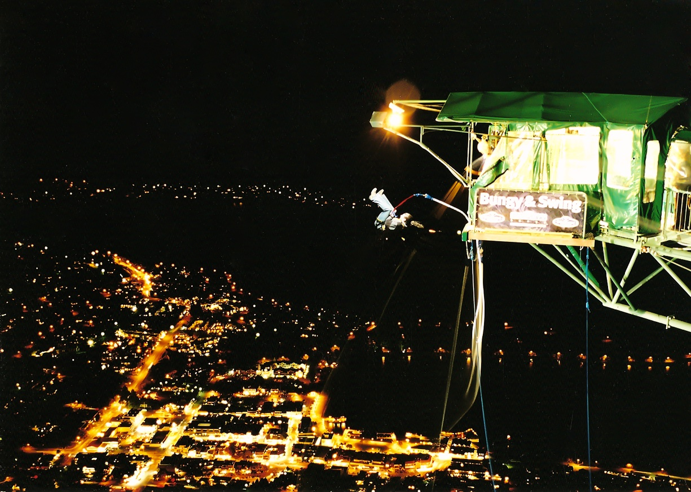
There are a number of operators that offer bungy jumping nationwide. However if I could only do one jump I would do the Ledge at Queenstown.
Operated through A J Hackett, the Ledge although not the original Kawarau Bungy site (the first commercial bungy jump site in the world) it is a Queenstown jump and it is an A J Hackett jump.
Launching off the side of the mountain Ben Lomond from an altitude of 400 m above the town the 47m jump feels like a much larger jump. The jump also has a body type harness attachment as opposed to the traditional feet hold, giving you the ability to swan dive, flip, back flip, run, what ever style of launch you wish into the jump.
The camera is mounted on the hillside to your left which when taking the photo/dvd option has Lake Wakatipu and Queenstown nicely filling the background behind you.
I recommend dusk is the best time for the photo. Included in the price is the gondola ride from downtown Queenstown to the restaurant/lookout and bungie launch pad at the top.
Since the Covid pandemic staffing has been an issue in Queenstown, check AJ Hackets website prior to visit or enquire when in town.
What, How, Why
Which Jet boat ride?
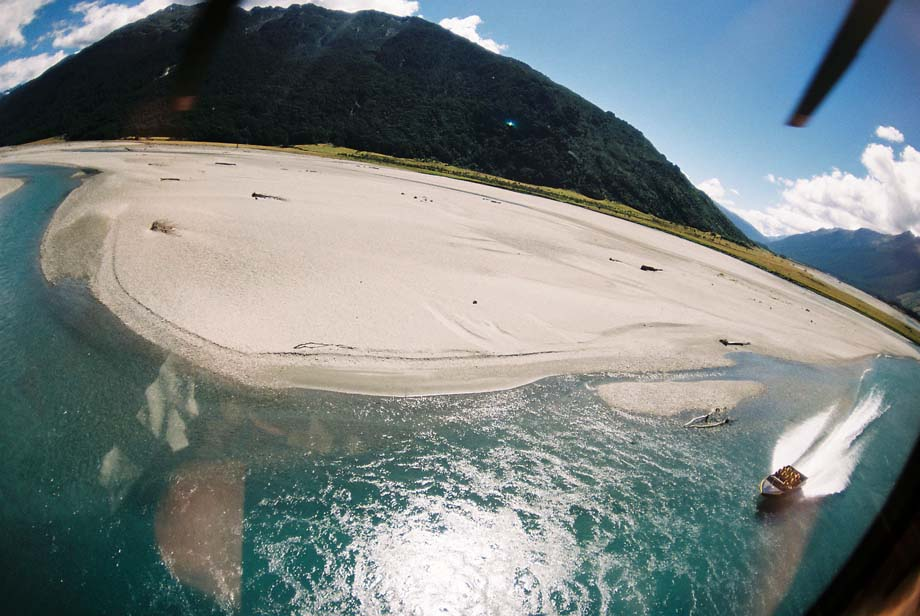
Jet boats being invented in New Zealand is one of those iconic trips to do while in the country. Of all the ones I have seen two rise to the top.
Backcountry Helicopter/Jet Boats based in Makarora offer a trip for about $200 that is a 30 min helicopter trip up into the stunning Mt Aspiring national park to a waiting jet boat that will deliver you back to Makarora and your waiting car/bus/van.
Dart River Jet Boats again for about $200. The Dart River flows from under Mt Earnslaw to the head of Lake Wakatipu at Glenorchy. The location is absolutely stunning as a number of movies have proved (Lord of the Rings and Narnia to name a couple). Including lunch and transport to and from the river from Queenstown the trip lasts for over 2 hours.
What, How, Why
Where should I Skydive?
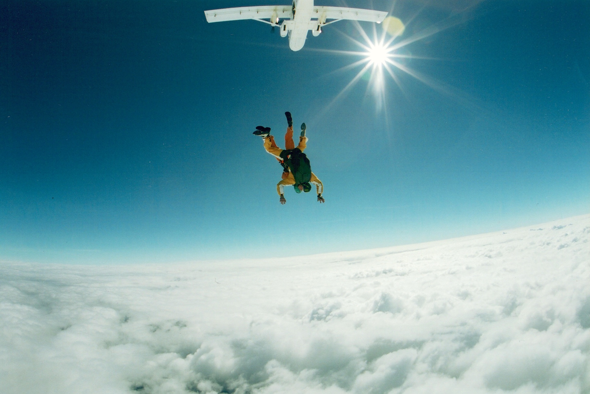
This is a hard question to answer as it is such a weather dependent activity, however saying that if the weather will be perfect through out your trip the answer is Taupō.
Taupō has a large set up for skydiving three companies operate from the Drop Zone. With such high level of competition and high turnaround of clients they can offer some of the cheapest jumping in the country. All three are well set up with gear and safety standards. With such I high standards in gear they all also offer the better videos to remember your jump by. (I do recommend spending the extra and getting a dvd of your jump as that is the easiest way to remember your jump, of my first jump I remember very little) if you miss Taupō because of weather Jump wherever you can (the weather allows) All other jump zones are around similar pricing (from $200 to $300 for a tandem jump plus dvd) There are Jump Zones at Abel Tasman, Fox Glacier, Wānaka, Queenstown and Christchurch that are all well set up for tourists (they operate 7 days a week weather permitting).
A question I heard often is which one has the best scenery. Honestly they all do, the scenery is amazing wherever you jump and if it’s your first jump you won’t really take it in that much anyway, so it won’t matter if you are over the largest volcanic lake in the world or next to the southern alps its all stunning!
What, How, Why
Where should I horse trek?
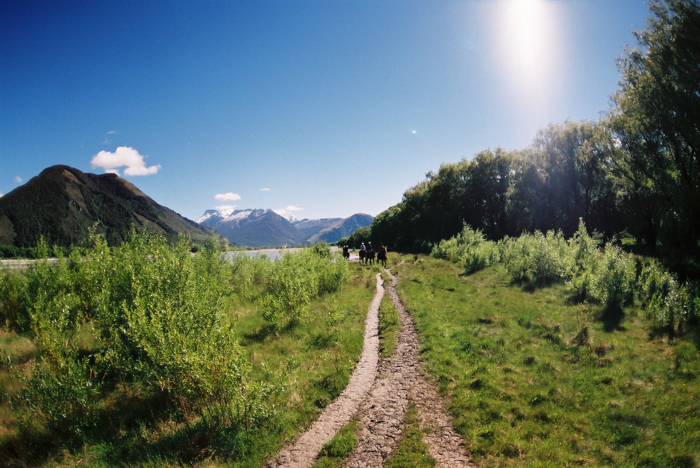
There are a number of horse trekking companies around the country offering slightly different features, like “can cater for skilled riders, or suited to unskilled riders”, “is an overnight trip”, “is a beach ride” etc. Horse trekking as a great way to access particular landscapes that would uncomfortable by other means.
I believe that in general when looking at choosing a horse trek company consider what level of riding you want to do versus what treks they offer. As a loose rule of thumb short duration treks 2 hrs to 1/2 day are designed to cater to the least experienced rider. You may get a short trot or canter somewhere in the ride. Full day and multi day hikes often do not attract the inexperienced riders so there’ll usually be more flexibility to cater to your ability.
Experienced riders please remember two things - firstly these horses are not yours, you know the nuance's of your horse and vice versa, and secondly many riders over sell their ability hence most trek companies will limit the freedom you have when on rides. While working as a trek guide I have seen incidents that were because someone over sold their ability.
High Country Horses at Glenorchy (40 min West of Queenstown) offer a great variety of rides from short 2 hour riders to multi day treks. Horses play a big part of the culture for Glenorchy, they are still used as a part of farming life. The scenery is second to none and it's obvious as to why many movies and TV advertisements are filmed in this area. So experiencing this area on horseback is a relevant and different approach from the bus/van.
What, How, Why
Can I see Dolphins?
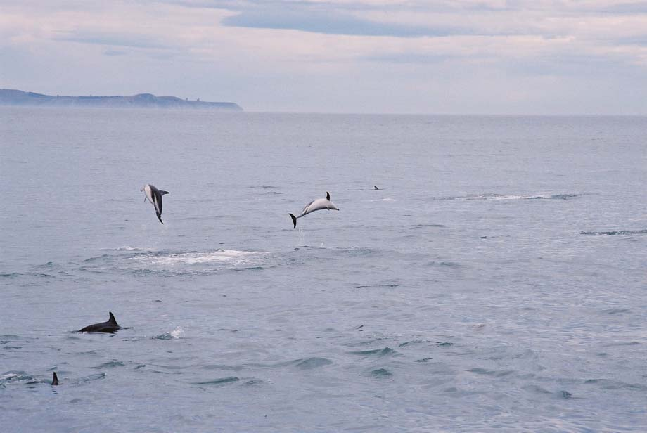
Yes, there are a few Dolphin sight seeing tours, however the award winning Dolphin Encounter in Kaikōura has won awards for good reason.
The large dolphin experience operation offer swimming with the dolphins and or just watching options.
The water temperature doesn’t vary much thought out the year, so regardless of season the experience in the water will be the same.
What, How, Why
Where can I see whales?
The Whale watch company in Kaikōura offer a unique trip for New Zealand. The purpose built boats not only show you whales in the wild but also provide you information on the whales and surrounding environment, so you can understand more what you’re amongst.
What, How, Why
Where should I learn to surf?
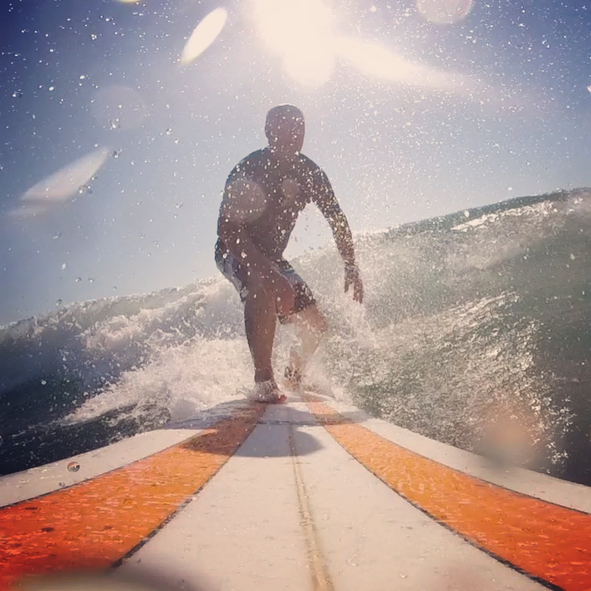
For those that have only just started surfing or want to learn, New Plymouth and the Taranaki region offer a good variety of surf from the expert only breaks to beginner breaks. If you are looking for a lesson or two Daisy Day’s Surf School is one of the best surf schools in the country. Daisy, a former women’s national surfing champion, has been surfing for many years and has been coaching/teaching surfing since the early 2000’s. If you’re keen enquire at Reach the Beach surf shop, they will put you in contact with Daisy’s school.
What, How, Why
Which bush walk (tramp) should I do?
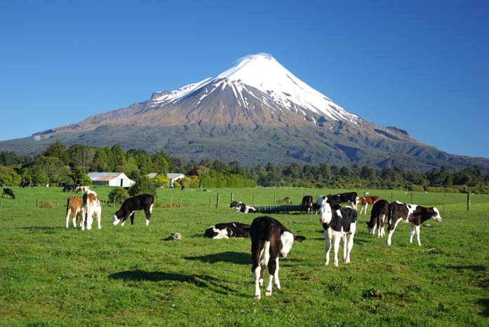
Tramping, bush walking, hiking are broad names for any type of exploring the landscape. It can be from the extreme mountaineering to near benign 30 min walk through a park. New Zealand, like so many other countries, has a variety of options. Which one suits you depends on so many variables namely: weather, technical ability required, your fitness and skill to name a few. Do not be fooled into believing that a day hike falls in that benign category.
If you are only after a short walk (under 2 hours) you will find many across the country accessing local highlights, these fall outside this section.
For the casual hiker, two hikes will rise to the top:
Abel Tasman day hike
Tongariro Crossing
Abel Tasman National Park
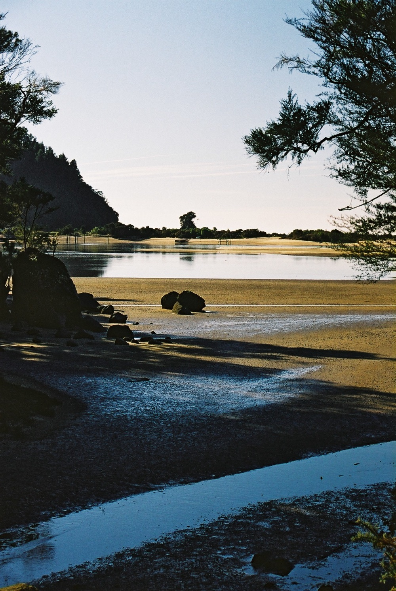
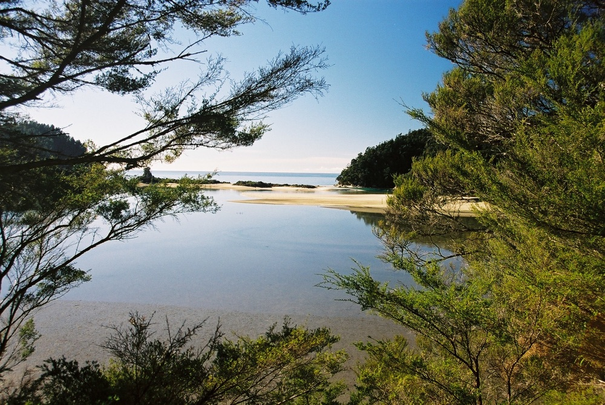
One of the best bang for buck options is Torrent Bay or Bark Bay to Marahau. Water taxi delivers you to the bay of your choice and you walk back to Marahau. Torrent Bay to Marahau about 3 hours, Bark Bay to Marahau about 4 hours.
Both walks are not challenging for people of average fitness.
The track is rarely closed and light walking equipment is all that is required, T-shirt, fleece, jacket shorts or long pants, can be done in jeans. Take packed lunch. With pick up and delivery options available good safety back ups are in place.
Tongariro Crossing
Billed as the top one day alpine pass walk in the world this is not one to be missed. The walk crosses from the base of Ruapehu, between Ngaruahoe and Tongariro, and down to the base of Tongariro. With a steep climb in the beginning the track meanders its way for the rest of the walk. Not a walk to be done in adverse conditions and the track is often closed during winter due to ice and snow. Suitable for absolute beginners. Take minimum equipment as per advised in tramping guide section. Has good safety options with a pick up and delivery service option advised.
New Zealand’s 11 Great Walks
Kepler Track
Tongariro Northern Circuit
Lake Waikaremoana
Whanganui Journey
Abel Tasman Coast Track
Heaphy Track
Milford Track
Routeburn Track
Hump Ridge Track
Paparoa Track
Rakiura Track
Most of these are multi-day hikes so for the target audience of this app they are outside the scope of this app. There is a lot of information online, do your research prior to starting one of these walks, some have fees, some have restricted numbers (so you have to book).
What, How, Why
Bush walk / hiking safety
New Zealand has world renowned hiking trails that are easily accessible from one end of the country to the other. These walks, while stunning and rewarding, unfortunately, are accessible with minimal safety precautions. Which means many people enter these hikes poorly prepared and have anything from a less than enjoyable to a deadly experience.
For some hikes it's obvious that only experienced hikers with all the gear should be attempting these hikes and I will stay away from those in this advice.
However from the four hour hike in Abel Tasman National Park to the multi-day hike in the Hollyford Valley the same basic principles should be followed.
Know the weather forecast and plan accordingly
Prepare for the worst weather
Appropriate food/clothing
Seems basic right? Yet for many these basics have cost them dearly.
Knowing the weather; this may not be as straightforward as it seems, looking on www.metservice.co.nz or watching/listening to the tv/radio reports will give you a regional idea of what is forecast but may not be what's delivered on the ridge you're walking. Talk to DOC rangers, DOC visitors centres based by/near where you're wanting to hike. In the case of the Tongariro Crossing, listen to the operators of the shuttles.
As an entry level kit (even for something as low risk as the Abel Tasman National Park):
T-shirt
Shorts
Lightweight top (hoodie, sweatshirt etc)
Lightweight (minimum showerproof) jacket*
Hat
Good next level kit
Merino top and pants (thermals) — the tops can be worn as under garments as well as on their own
Shorts
Polar-fleece or wool pull over
Waterproof jacket/pants
Beanie
Woollen gloves
*Jackets need to be windproof more than waterproof. If you get wet but can keep the wind out your body will heat up the moisture in your clothes, but if the wind can get in/through you will quickly get in trouble. Ideally you want to keep the rain out as well, but if your trip to New Zealand may only include the Tongariro Crossing and/or the Abel Tasman National Park, does spending the extra money make sense? If the weather is not favourable then simply don't do the hike.
Avoid
Try and avoid denim, drilled cotton, thick sweatshirts, anything that will hold moisture. A 1/2 day hike in Abel Tasman National Park in mid summer with forecast sunny weather is the time you could not worry about this too much.
Food
Take light (both in weight and eating) foods that give greatest energy returns: muesli bars and chocolate bars should be in your pack.
Sunscreen — you'll be outside the weather preferably on a nice day, the sun will be shining.
The weather: Any of New Zealand's hiking trails have an uncanny ability to start as a stunning day, then have hurricane winds, snow, torrential downpours and fog, to return to a sunny day by evening. In many alpine settings these weather changes can be local so the greater region has completely different weather.
Glaciers
When exploring the glaciers the above suggestions still stand but add gloves to your kit list. The gloves are not to keep your hands warm, they are there to stop your hands sticking to the ice if you touch the ice.
Summary
The goal is to keep your core warm, and not lose heat through your head. The best way to do this is keep your core/head protected. By walking you pump blood through your legs so for the most part they will stay warm and the same with your hands.
Anything you wear should not hold moisture, and you should have on hand a jacket to keep the wind off your core. If you're stuck any camping store (Hunting & Fishing, Macpac, Kathmandu) should be able to set you up well.
Wet and windy is the most dangerous.
As Billy Connolly once said, "there is no such thing as bad weather, only bad clothing."